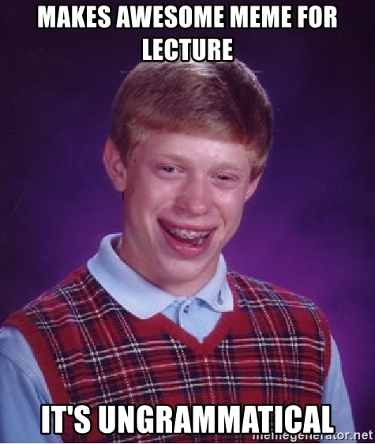

--- ### About that other presentation software... - - (I'm always chasing better learning outcomes. Oh well.) --- # Productivity in Morphology ### Dr. Will Styler - LIGN 120 --- ### Today's Plan - The Wide World of Words - Morphological Productivity - Productivity as Restriction - Productivity as Extension - Lexicalization --- # The Wide World of Words --- ### Languages have many, *many* words - The average adult speaker of a language knows 20,000-30,000 words - This is surprisingly hard to estimate! --- ### A big part of learning a language is learning the vocabulary! - These include function words - Pre/Postpositions, Determiners, Pronouns, Conjunctions) - As well as content words - Nouns, Verbs, Adjectives, Adverbs - These words range from very common ('the') to very uncommon ('decimate') --- ### Zipf's Law - "In a given corpus of natural language, the frequency of a word is inversely proportional to its rank in the frequency table" - *The most common words are **really** common!* - ... and the rarest words are super rare --- <img class="wide" src="morphology/zipf2.jpg"> --- ### This is a double-edged sword - We don't need to know *that* many words to be functional day-to-day - **but** rare words are exceedingly rare --- ### We need to be able to interact with and understand unknown words! - Because we probably don't know all of the words - ... and even if we did, we need new words regularly! --- ### New words are commonly required - New concepts are regularly developed - New cultural or general concepts need marked - <img class="wide" src="morphology/binge_watch.jpg"> --- ### So, we need some way to be able to use and decipher new words! --- ### We've talked about many *morphological processes* - Affixation - Stem modification - Conversion - Reduplication --- ### To mark a meaning, the process is applied to a word - This could be inflectional - e.g. kot -> koti ('cat' -> 'cats' in Russian) - Or derivational - e.g. 'thick' -> 'thickness' --- ### Individual morphological processes don't apply to every word - Cuteness, but *quicklyness - English plural as 'cats', 'dogs', 'dishes', 'deer', 'oxen', 'foci' - *deers and *cat and *dishi and *dogen (as plural form) - Speakers know what forms apply to which words --- ## This is a glanch <img class="small" src="img/object.jpg"> - There are two ___? - An object that is a lot like this would be ___? - If you turn something into a glanch, you would ___ it? - Somebody who uses a glanch would be a ____? --- # Morphological Productivity --- ### Morphological Productivity - The degree to which a grammatical process is in use by speakers - Can we use this morphological pattern with a brand new base? --- ### Interesting questions in Productivity - What knowledge or abilities do speakers/listeners use to make/understand words they haven't heard before? - How can we characterize the productivity of a morphological process? - How do we know what processes *can* and *can't* work with a given word? - Is this word form learned as a monolithic whole, or as analyzable chunks? --- ### How do we describe productivity? - There are two approaches in common use - 1) *Assume patterns are general, and then discuss restrictions* - 2) *Assume patterns are local, and then discuss extensions* --- # Productivity as Restriction --- ### One approach: Assuming general patterns - "Let's assume that all morphological patterns are *unconstrained*, and then identify those unique places where it appears *constrained!*" - Identify the pattern, then describe when that pattern can't be extended to new forms - The **restrictions** dictate the productivity --- ### English *-ity* makes nouns from adjectives - Sparse -> Sparsity - Secure -> Security - Responsible -> Responsibility - Productive -> Productivity --- ### English *-ity* doesn't always work - Foolish -> *Foolishity - Sexy -> *Sexity - Peaceful -> *Peacefulity - ... but we have 'Foolishness', 'Sexiness', and 'Peacefulness' to carry the day - **-ity works with all adjectives except those ending in -ish, -y, or -ful** - This is its *productivity* --- ## Types of Restrictions on Productivity --- ### There are three kinds of restrictions often found with productivity - Phonological Restrictions - Semantic Restrictions - Morphological Restrictions --- ### Phonological Restrictions - The *form* of the base restricts the application of an affix - English patient noun -ee works in retiree and payee - ... but not with free -> \*freeee or accompany -> \*accompanyee - English verbal -ize works with **pri**vatize and **glo**balize - ... but not with cor**rupt** -> \*cor**ruptize** or se**cure** -> \*se**curize** --- ### Phonological Restrictions - These have no semantic or morphological basis, just simple rules *based on the form of the word!* - -ee only attaches to words without final /i/ - -ize only attaches when there would be an alternating rhythm --- ### Semantic Restrictions - The *meaning* of the base restricts the application of an affix - Russian "quality noun" affix -stvo only works with people-describing adjectives - bogatyj ‘rich’ -> bogatstvo ‘richness’ - znakomyj ‘acquainted’ -> znakomstvo ‘acquaintance’ - udaloj ‘bold’ -> udal’stvo ‘boldness’ - lukavyj ‘wily’ -> lukavstvo ‘cunning’ - vjalyj ‘withered’ -> *vjal’stvo - priemlemyj ‘acceptable’ -> *priemlemstvo --- ### Morphological Restrictions - The *grammatical or morphological nature* of the base restricts the application of an affix - The English -ee only attaches to verbs - Retire -> Retiree, but quickly -> \*quicklyee - The *-ando* progressive aspect in Spanish only attaches to '-ar' verbs - caminar -> caminando, but subir -> \*subiando --- # Productivity as Extension --- ### Alternative Approach: Assuming locality - "Let's assume that all morphological patterns are *constrained*, and then identify those unique places where it appears *to extend!*" - Identify the pattern, then describe what forms it extends to. - The **extent** dictates the productivity --- ### English *-ity* works best with some forms - "*English -ity is typically used to make nouns from adjectives ending in -able and -ive*" - responsible -> responsibility, productive -> productivity, available -> availability, payable -> payability - creative -> creativity, inclusive -> inclusivity, responsive -> responsivity - "*Sure, maybe it works with some other words, but that is where it's **always** productive*" - sparse -> sparsity, secure -> security, horrible -> ?horriblity --- ### There's often ambiguity here - There isn't always just one form --- <section data-background-color=#708cef></section> ### Something that tastes like almonds tastes... A: Almondy B: Almondish C: Almondtacular D: Almonderiffic E: of almond --- ### There's also sometimes competition - Especially when many morphemes are borrowed and the 'proper' form depends on the language - "Was this borrowed from Latin? Greek? Is this Germanic?" --- <section data-background-color=#708cef></section> ### This is an octopus. Now there are two of them. There are two... A: Octopus B: Octopuses C: Octopi D: Octopodes E: Hexadecapus --- ### Productivity is about patterns - We can ask these same questions for other patterns of morphological change - Stem modification, reduplication, and more - How often does this process occur for new words? - How regularly (and where) does it occur for existing words? --- ### We're very productive! - Humans are excellent at finding and extending patterns - **Let's give it a try** --- ### What do these memes have in common? Where do they differ? <img class="small" src="morphology/babymeme1.jpg"><img class="small" src="morphology/babymeme2.jpg"><img class="small" src="morphology/babymeme3.jpg"> --- ### I made my own! - <img class="wide" src="morphology/babymeme_wrong.jpg"> ---  --- ### Success Kid Memes <img class="wide" src="morphology/babymeme_exp.jpg"> --- ### Bad Luck Brian has his own grammar <img class="small" src="morphology/brian_1.jpg"><img class="small" src="morphology/brian_2.jpg"> --- **Seeming success** -> **Unexpected twist of fate leaving the success hollow** <img class="wide" src="morphology/brian_blank.jpg"> --- ### Many other memes have productive and unproductive domains - Keysmashing (asdf;lkj) - SpOngEBoB MemE! - <img class="small" src="morphology/isthisa.jpg"> --- <img class="wide" src="ling_memes/is_this_language_acquisition.jpg"> --- # Lexicalization and Fossilized Forms --- ### Sometimes, forms completely cease being productive - -en is no longer a productive plural for English - oxen, children, women, \*wugen, \*thoten - Ablaut is no longer a productive process - sit -> sat, sing -> sang, sting -> stung, ding -> \*dung, yeet -> \*yote --- ### A process which is no longer productive has been 'lexicalized' - We view 'children' as a quirk of 'child' - ... not as the expression of a working process - We view 'brethren' as a separate word - ... not as the plural of 'brother' - We consider `strong' (ablauted) verbs to be 'irregular' - ... rather than another way to make a past tense --- ### At this point, the affix is fossilized - You may find it in old words - Speakers may be vaguely aware of the affix - It's no longer active - It is lost to the language --- <section data-background="img/parchment.jpg"> <audio data-autoplay src="video/lotr_ring.m4a"></audio> <img class="wide" src="img/onering.jpg"> *... and some things that should not have been forgotten were lost. History became legend, legend became myth. And for two and a half thousand years, the morpheme passed out of all knowledge.* --- <section data-background="img/parchment.jpg"> *Until, when chance came, it ensnared another bearer.* --- ### ... but that's next week! --- ### Wrapping Up - There are a great many words, but we always need more - Some affixes are productive, available to use for new words - We can define productivity in terms of restriction, or extension - When a form completely ceases to be productive, it is *lexicalized* - ... until it is discovered once more --- ### For Next Time - Some fun data, then we'll get creative --- <huge>Thank you!</huge>